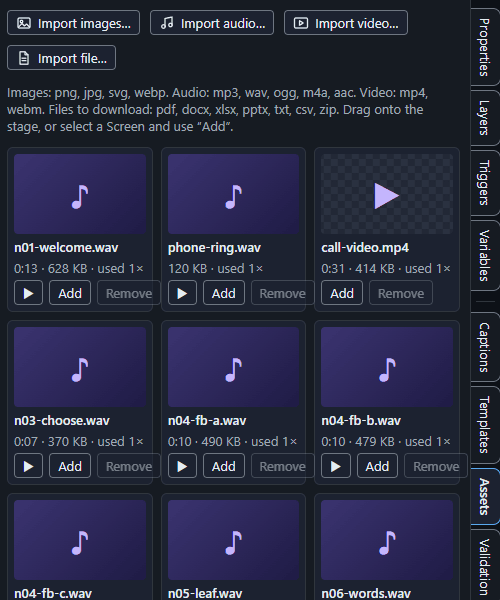

Your project is one file
A project is a single .kfoundry file. It holds the course and everything it uses: the pictures, sound, video and files you added. Nothing sits beside it, so you can copy it, email it, or put it in a shared folder as one file. Ctrl+S saves it, and Save as makes a copy under a new name.
The Assets panel lists the files that travel inside the project. Here are the narration recordings and the call video of Handling a Difficult Call, each with its length, its size and how many times it is used:

- Saving is safe. The app writes a complete new file and swaps it in when it is finished, so a crash while saving never leaves half a project.
- It is a zip. Like a Word document, the file is really a zip. If you ever need to look inside, make a copy, rename the copy to end in
.zipand open it:project.jsonis the course and theassetsfolder holds the files. Rename it back to.kfoundryto use it again. - Older projects. A project saved by an earlier version (a plain text
.kfoundryfile with a.assetsfolder next to it) is not opened by this version. - Exporting is separate. Exporting a course for an LMS makes its own package and does not change your project file.